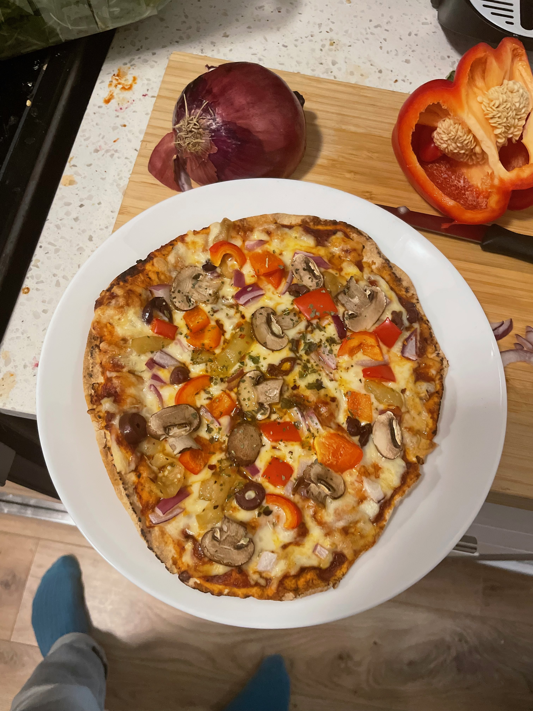

home
pita pizza

description:
i make this for dinner all the time. it's extremely malleable - you can pret
ty much use this to get rid of any ingredients you have lying
around in the fridge. i generally use onion, pepper, mushrooms, and some
type of deli meat (my favourite is spicy genoa)
ingredients:
- thin pita
- pizza sauce, jar
- cheese (whatever you want - mozarrella, feta, parmesan, etc.)
- vegetables, diced
- deli meat, optional
- spicy pepper flakes, garnish
steps:
- preheat oven to 400C
- put pizza sauce and cheese on pita
- garnish with vegetables and meat
- cook for 10 minutes (ish)